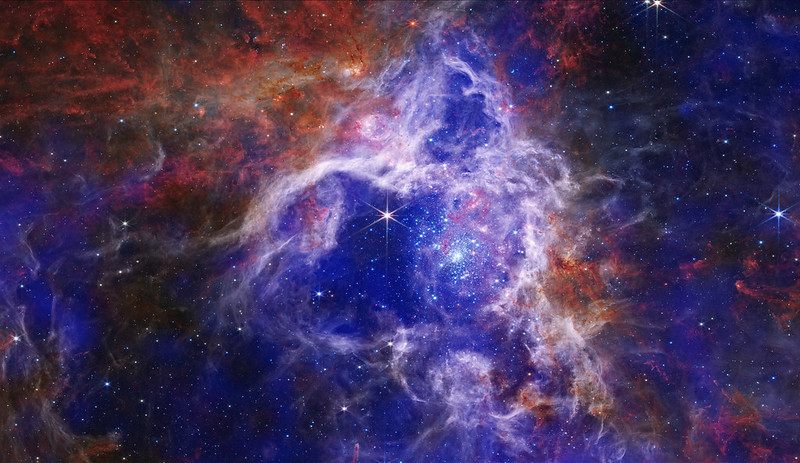
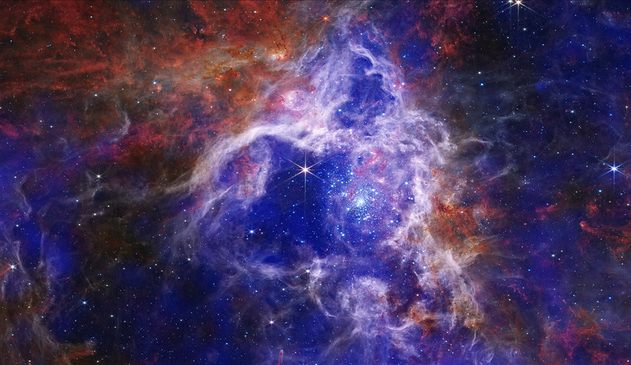

Про телескоп Вебба
Справа зображений американський орбітальний інфрачервоний космічний телескоп (англ. James Webb Space Telescope, JWST). Він призначений для широкого спектра спостережень в астрономії і космології, зокрема, спостереження найвіддаленіших об'єктів і подій у Всесвіті, як-от утворення перших галактик.
Розробка і керування телескопом здійснюється шляхом міжнародної співпраці 17 країн, на чолі з НАСА, зі значним внеском Європейського та Канадського космічних агенств. Цей телескоп є наступником Хаббла як головної місії НАСА в астрофізиці. На момент запуску телескоп Вебба був найбільшим, найдорожчим та найчутливішим оптичним та інфрачервоним космічним телескопом в історії людства.
Клікни на відео, щоб зупинити чи почати відтворення
Початок покладено
У вересні 1989 року Науковий інститут космічного телескопа (STScI) і NASA спільно провели в STScI Семінар космічного телескопа наступного покоління, який зібрав понад 130 астрономів та інженерів. Група запропонувала NASA дослідити можливість використання 10-метрового телескопа ближнього інфрачервоного діапазону з пасивним охолодженням на високій навколоземній орбіті або 16-метрового телескопа на Місяці для вивчення галактик із великим червоним зміщенням.
У 1996 році комітет із 18 членів на чолі з астрономом Аланом Дреслером офіційно рекомендував NASA розробити космічний телескоп, який би спостерігав небо в інфрачервоному світлі — діапазоні довжин хвиль, який дозволяє астрономам бачити крізь пилові та газові хмари та поширює зір людства далі у простір і назад у часі. Він матиме дзеркало діаметром більше чотирьох метрів і працюватиме на орбіті далеко за межами супутника Землі.
Три команди, що складаються з науковців та інженерів з приватного та державного секторів, зустрілися, щоб визначити, чи зможе NASA реалізувати бачення комітету. Усі троє дійшли висновку, що запропонований телескоп працюватиме. У 1997 році NASA погодилося профінансувати додаткові дослідження, щоб уточнити технічні та фінансові вимоги до будівництва телескопа. До 2002 року агентство вибрало команди для створення інструментів і групу астрономів, які забезпечать керівництво будівництвом. Також у 2002 році телескоп був офіційно названий космічним телескопом Джеймса Вебба на честь адміністратора NASA , який керував розробкою програми «Аполлон».
Запуск телескопу
Космічний телескоп Джеймса Вебба запустили на ракеті Ariane 5. Ракета-носій і стартовий майданчик є частиною внеску Європейського космічного агентства в місію. Ariane 5 є однією з найнадійніших ракет-носіїв у світі, і її було обрано за поєднання надійності (це була єдина ракета-носій, яка відповідала вимогам NASA для запуску такої місії, як Вебб), і за цінність, яку вона приносить через міжнародне партнерство.
Вебб був запущений зі стартового комплексу Arianespace ELA-3 на космодромі Європи, розташованому поблизу Куру, Французька Гвіана. Стартові майданчики вигідно розташовувати поблизу екватора - обертання Землі може допомогти дати додатковий поштовх. Поверхня Землі на екваторі рухається зі швидкістю 1670 км/год.
Сегмент запуску складається з 3 основних компонентів:
1. Ракета-носій: Аріан-5 з кріогенною розгонкою. Надається в конфігурації для одноразового запуску з довгим обтічником корисного навантаження, що забезпечує максимальний статичний діаметр 4,57 метра та корисну довжину 16,19 метра.
2. Адаптер корисного навантаження, що включає конус 3936 плюс нижній циліндр ACU 2624 і затискну стрічку, який забезпечує роздільний механічний та електричний інтерфейс між обсерваторією Вебба та ракетою-носієм.
3. Підготовка стартової кампанії та стартова кампанія. Підготовка стартової кампанії та стартова кампанія є спільною відповідальністю NASA, ESA, Northrop Grumman і ArianeSpace.

Вебб був запущений на ракеті-носії ArianeSpace Ariane 5 25 грудня 2021 року. Джерело: NASA/Кріс Ганн
Створення ідеї 10-метрового телескопа ближнього інфрачервоного діапазону.
Поглиблення ідеї телескопу, який відтепер працюватиме на орбіті далеко за межами Землі.
Початок розробки, створення команд для будівництва, визначення назви телескопу - на честь Джеймса Вебба.
Телескоп пройшов критичну експертизу конструкції, розпочато будівництво.
Повністю готове та встановлене на телескоп головне дзеркало.
Останні налаштування, запуск телескопу 25 грудня.
Як Вебб може досліджувати ранній Всесвіт?

Зіткнення галактик Антен викликало утворення мільйонів зірок. Інфрачервоні спостереження на цьому зображенні показують теплі хмари пилу, нагріті новонародженими зірками. Джерело: NASA
Коли астрономи використовують телескоп, щоб дивитися далі, вони також повертаються в минуле. Причина проста: світлу потрібен час, щоб подолати простір. Навіть світло від Місяця становить 1,3 секунди, коли ми бачимо його на Землі. Найвіддаленіші галактики, які спостерігав космічний телескоп Хаббла, знаходяться на відстані понад 13 мільярдів світлових років. Це означає, що світло, яке зафіксував Хаббл, залишило ці галактики понад 13 мільярдів років тому.
У міру того, як Всесвіт розширюється, світло розтягується на все більшу й більшу довжину хвилі , за межі видимої частини спектру в інфрачервоне. До того часу, коли видиме світло від дуже далеких галактик досягає нас, воно виглядає як інфрачервоне світло. Хаббл може виявляти інфрачервоне світло — довжини хвилі, найближчі до червоного кінця видимого спектру. Космічний телескоп Джеймса Вебба спостерігає виключно за інфрачервоними хвилями , бачачи глибше в цю частину спектру, ніж Хаббл.
Там, де Хаббл бачить молоді галактики, Вебб може показати нам новонароджених. Вебб розроблено для спостереження на найперших стадіях формування галактик, і астрономи сподіваються, що це дозволить їм вивчити формування найперших галактик. Вебб може показати, як малі галактики в ранньому Всесвіті зливалися, утворюючи більші галактики. Нарешті, там, де Хаббл бачить лише найяскравіші викиди з цієї давньої епохи, Вебб здатний виявити набагато більше загальної популяції зірок і галактик у той період. Ця розширена вибірка ранніх галактик дасть астрономам краще уявлення про те, як виглядали галактики, коли вони вперше виникли, і допоможе їм скласти карту загальної структури Всесвіту.
Галерея

 
